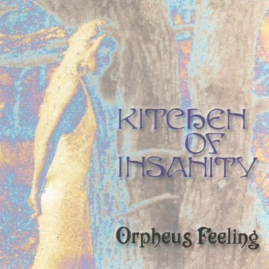

|
|
The
release of Dreamaway
Sunday is
followed by a long thread of live performances, including a
legendary show at the famous Brielpoort in Deinze.
Further appearances like a televised set for Roodvonk on BRT
national TV and many radio interviews bring the band's level of
success to a new peak. A complete show at the Vooruit in Gent is
sponsored, recorded and broadcast by BRT national radio. On top
of all that, a tour of Germany is greeted by an ever growing fan
base; the sky seems to be the limit!
All this positive activity propels restless orgies of
ego-tripping and creative chaos - we tolerate laughter!
But
despite this great big rolling train being under full steam,
cracks start to appear, damaging the machine's core. After
countless hours of talking, misunderstandings and needless
discussions, the band decides to replace its rhythm section. The
search for two new suitable band members proves to be a long,
hopeless, booze-fuelled hunt for new forces and unknown horizons.
After a short while Fil Yzerdraad enters the story by joining the band on bass. Fil
was a one time member of Nacht und Nebel, a once very popular Belgian band, most
famous for their world hit record, Beats Of Love. During the mid 1980's, Nacht und Nebel had been riding atop a
wave of new, electronically based music; a wide range of
followers soon stepped into their tracks.
Finding a new drummer turns out to be far more difficult though,
so a studio musician is temporarily contracted to play at gigs.
The second coming was ready to rock.
Around this time, the Kitchen earned themselves the label of top opening act, playing numerous gigs at large venues. Critics, both national and international, were getting into the band big time, producing positive reviews. Meanwhile, a core of diehard fans continue to follow the Kitchen to every single show; it's a period best described when using the terms 'full blown partying' and 'obsolete madness'.
The
band by now is trying out new material and start work on what
will become the successor to Dreamaway Sunday. Still in a very early
developing phase, the new songs seem to have a major thing in
common: they're longer, deeper drilling compositions with a
floaty character.
After about a year fuelled by ups and downs, the Kitchen set out
to blow life into what would soon be Orpheus Feeling. The production process
is pretty much the same as it was at the time of Dreamaway Sunday: Studio 8, conducted by blind
wonderboy Pino
Guarracci,
again is the perfect womb for the Kitchen to craft their magic.
Their very tight budget does the job nicely, it's by all means
enough to bring the newborn to completion in a fortnight.

The
main thing that stands out as a difference between both albums is
the use of soundscapes and inventive swings of mood and feeling,
at moments leaning towards the bizarre.
The songs are well woven entities, hovering between Sixties
psychedelia and Seventies progressive. An interesting blend of
styles, flavoured with sound effects and acoustic interludes;
dreamy, catchy, haunting,... Orpheus Feeling is a trip, taking on the
challenge with the world at large and fans of the first album,
who at first seem to be puzzled by great differences and
technical progression after their first dive into Orpheus.
Available in the CD format only, the first pressing of 1.000
copies feature a free promotional vinyl single including a live
version of St.
Vitus Dance Revised, taped at the Vooruit in Gent.
But nothing is as it seems and after a second run through the
album, the spectator finds himself on the same road where Dreamaway Sunday left off. Both the
melancholia and dark romance of the debut album have returned,
yet this time there's still more deepness and emotion; the ever
present insanity of restless dreams and broken hearts revisited.
Whatever... is an ode to the late Nick Drake, the young romantic who
by then had not yet achieved the iconic status his legacy is
blessed with now - certainly not in Belgium. Both Orpheus Feeling (the song) and Never Growing Inside are major epic songs
dealing with mortality and human's tight grip on all things gone
by, unwilling to let go of things that were... the way they once
were. This theme is also portrayed in the dreamy patterns of the
music; melancholia and sadness abound. And while other, rockier
songs like Lost
In My Dreams
and Sunny
Day provide
a counterweight musically, their lyrical contents do not. This is
what makes Orpheus sort of a concept album...
Aided by film school students and a miniscule budget, a video
clip is shot at the scene of the old deserted coal mines of
Zwartberg. Sitting
In The Shades Of Summer was the perfect choice for the first ever promo
clip by the Kitchen.
The
new CD is met with positive reviews at the time. Even critics
writing for Humo magazine dare to use the words dark, unearthly
and minor masterpiece in one phrase when reviewing Orpheus Feeling: "It will one day
find its way"...
A tour of The Netherlands is next, made possible by the small but
ever growing Kitchen fan base.
| background music: Orpheus Feeling (Orpheus Feeling) |